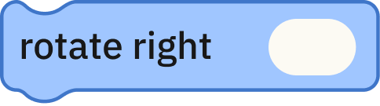
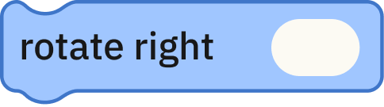
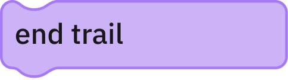
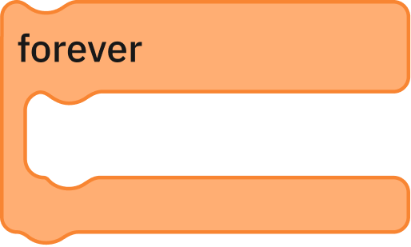

What You'll Need
Participants: 1
Devices: 1

 

1. Planning
Let's practice telling time with your Capybara! Start with pen and paper by drawing the following hours in an analog clock:
 Hint:
Remember that the analog clock has 2 hands, a short one pointing to the "hour", and a long one pointing to the "minutes".
Hint:
Remember that the analog clock has 2 hands, a short one pointing to the "hour", and a long one pointing to the "minutes".
2. Drawing a Clock
Let’s draw a clock on the floor. You can use chalk.

3. Drawing the Long Hand
Now place the capybara in the middle of the clock you drew.
Let’s make the Capybara draw the 3 o’clock hands.
In this case, we’ll start with the long hand. As the time is 3:00, the long hand should be aligned with the “12”.
4. Resetting the Capybara
Now that you have the long hand pointing at “12”, let’s go back to the center.
 Hint: You can walk backwards by using a negative number.
Hint: You can walk backwards by using a negative number.
5. Drawing the Short Hand
Now turn to the right to face the “3”.

And walk forward less steps than before, to draw the short hand.
6. Resetting the Capybara
You got it!
Now you can go back to the center of the clock by walking backwards again.
The whole code should look like this:

Take it Further
Now draw all of the times:
Or even check what time it is now!
...and beyond!
Let’s draw the same times as above, now in a digital clock!
Take the following image as an example:
Block Inventory
EVENTS

MOTION

LOOKS

CONTROL
